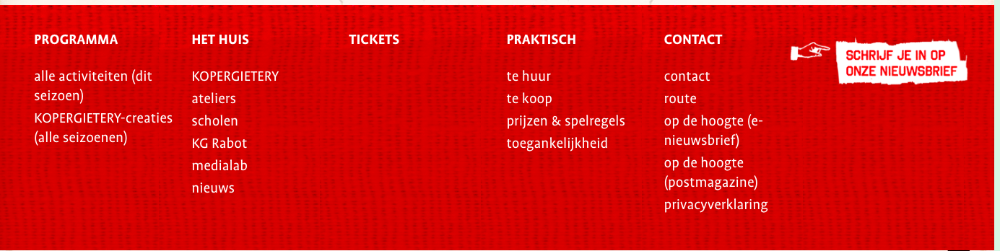
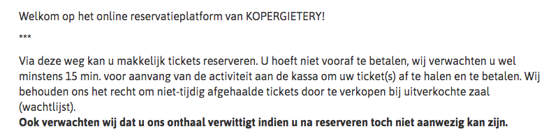
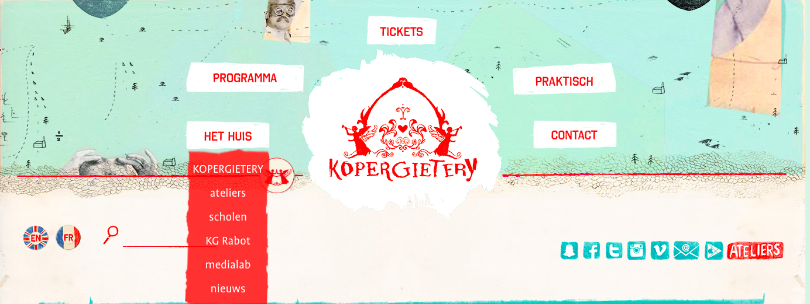
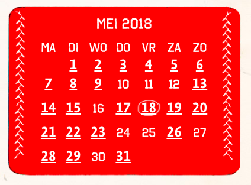

De concurrentie die ik gekozen heb voor dit project is De Kopergietery in Gent, het Paleis in Antwerpen en Bronks in Brussel. Alle drie zijn het jeugd-en kindertheaters. Het zijn de meest gekende jeugdtheaters van België. In elke grote stad in Vlaanderen is er wel zo'n theater te vinden. Maar in de stad waar ik woon, hebben we dit nog niet. Dit is dan ook de reden waarvoor ik gekozen heb om het in Aalst te implementeren. Bij het maken van zo'n project moet er eerst gekeken worden naar de concurrentie.
In deze concurrentieanalyse ga ik op zoek naar de slechte en goede voorbeelden die ik bij de concurrentie vind. Ook zal ik kijken naar wat ik zelf op mijn website wil en nodig vind.
Ik vind het lettertype bij deze links net iets te groot. Dit zou ik kleiner doen aangezien dit een deel is van de website waar niet iedereen naar kijkt.
Ik vind het niet logisch dat er niet op voorhand betaald moet worden. Zo kan het zijn dat er heel veel reservaties te niet worden gedaan omdat men dan op het laatste moment dan niet komt opdagen.
De menubalk op zich vind ik heel leuk maar ik vind het moeilijk om alles terug te vinden. Misschien is het beter om niet te veel onderverdelingen te hebben en het beperkt te houden.
Ik vind het leuk dat je op de homapage direct een agenda vindt om naar een bepaalde datum te zoeken. Dit gaat heel snel en is heel handig.
